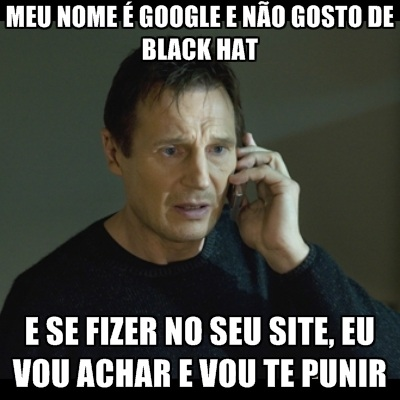
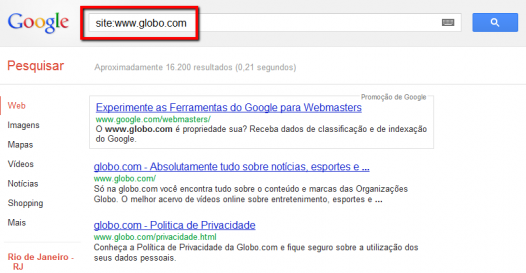

Um dos grandes medos de quem tem um site é que ele receba uma punição do Google. Ela é quase um sinônimo de ostracismo na web. Aprenda aqui neste post como identificar esta situação crítica em tempo de contornar rapidamente, antes que as visitas orgânicas caiam drasticamente e signifique o fim do site.
- 
- O Google não deixa o pessoal do Black Hat dormir tranquilo.
O primeiro passo para se proteger é ler atentamente todos os pontos das Diretrizes para Webmasters do Google, que também são conhecidas como Diretrizes de Qualidade.
Está pensando em alterar algo no site ou no HTML? Releia as Diretrizes e veja se a mudança gera algum conflito.
Tipos de Punição
Caso o site esteja fora das instruções, existem basicamente duas formas que o Google utiliza para repreender:
- Punição
- Exclusão
Seu site irá descer diversas posições, sendo o foco na perda de ranking. O objetivo da Punição não é tirar o seu site dos resultados do Google e sim fazer com que aconteça uma diminuição de ranking. Pode ser que seu site perca 30 posições, ou até mesmo 950! No primeiro caso, que seria uma punição leve, seu site cairia três páginas, enquanto que no segundo, uma punição mais pesada, iria para o final da lista de resultados.
Simplesmente seu site desaparecerá de qualquer pesquisa feita no Google. Essa é a pior, mas geralmente envolve práticas de Black Hat, como doorway pages.
Se nada disso aconteceu, mas seus acessos caíram, provavelmente o motivo foi uma queda natural de ranking pelo algoritmo, e não uma punição.
Agora vamos ver como avaliar se o seu site foi punido, seguindo as indicações do próprio Google.
Como Identificar: Passo a Passo
Se você quiser este infográfico no seu site, pegue-o aqui.
Seu site foi punido?
Faça uma pesquisa no Google
Uma das formas de saber se o seu site está bem indexado ou não é utilizando um operador de busca no próprio Google. Digite em sua barra de busca:
site:www.seusite.com.br.
Repare que não há espaço entre o operador e a URL.
- 
- Figura 1: Operador de Busca no Google
{kind=link}
Isso fará com que seja exibida uma lista das páginas indexadas. Você pode notar que a lista indica que existe uma quantidade muito maior de páginas listadas, mas apenas uma parte menor está sendo exibida.
Verifique se o seu site é classificado para o seu nome de domínio
Procure pelo seu site no buscador digitando www.seusite.com.br. Se ele não for exibido ou estiver em uma posição com pouco destaque, é um indício de uma possível punição manual por violar as Diretrizes do Google.
Certifique-se de que o Google consegue rastrear e indexar seu site
Para que seu site seja indexado e exibido nos resultados de busca, o Google primeiro precisa fazer o rastreamento utilizando seus robôs, os chamados Googlebots. Verifique no site de Ferramentas para Webmaster como está a sua indexação. A Figura 2 mostra o caminho para isso.
{kind=link}
Na verdade esse status de “Não Encontrado” pode ser somente um dos problemas de indexação. Recomendo que dê uma explorada dentro desta aba de Integridade, que está destacada pelo retângulo vermelho na Figura 2.
Seu site REALMENTE foi punido?
Muitas vezes há uma grande queda nos acessos, seu site caiu diversas posições, mas não necessariamente seu site foi punido. É bem comum acontecer algum problema dentro do seu site, fazendo com que ele bloqueie a passagem dos Googlebots, impedindo-os de funcionarem corretamente. A melhor maneira de ver isso é através das Ferramentas para Webmaster, dentro da aba de Erros de Rastreamento.
Caso exista algum erro, corrija-o o mais rápido que puder, pois da próxima vez que o Googlebot passar ele identificará as correções e irá atualizar a lista do Google.
Abaixo estão listados os problemas mais comuns da manutenção de um site que podem impactar na sua indexação e/ou ranqueamento.
Redirecionamento 301
É imprescindível que ao criar uma nova página para substituir outra, você faça o redirecionamento no servidor utilizando o código HTTP 301 da página antiga para a nova, senão você vai perder toda a relevância adquirida por aquela URL específica.
Como o Google indexou a URL antiga, que você não usa mais, se você não fizer o redirecionamento o Googlebot irá encontrar uma página abandonada, uma vez que a estrutura do seu site está apontando para a página nova. Com o redirecionamento você indica para o Google que a indexação deverá ser feita na URL nova. Simples assim, que maravilha!
Se você não entende muito bem como alterar isso, fale com o responsável técnico pelo seu site, com certeza ele vai saber. É um procedimento bem simples.
Robots.txt
Uma configuração equivocada do robots.txt pode trazer consequências muito graves para o desempenho do seu site, como uma queda vertiginosa nos acessos.
Se estiver com dúvidas de como testar o robots, de forma que esteja configurado para que não atrapalhe o desempenho do seu site, veja mais na ajuda do próprio Google.
No momento em que alguma parte do site é indicada para o Googlebot não acessar, ele interpreta que essa página não deve ser exibida nas suas buscas. Então é importante ficar atento para testar se o arquivo robots.txt está bem configurado.
Sitemap
É muito importante a manutenção de um sitemap bem feito e atualizado no site. Mesmo que o site já tenha sido todo rastreado e indexado pelo Google, é uma ótima forma para ajudá-lo com mais informações sobre suas páginas.
Eles são indispensáveis para quem possui um conteúdo que é constantemente atualizado, ou então, que sejam difíceis para os crawlers acessarem, como páginas muito novas ou com poucos links apontando para ela.
Ainda não identificou o que pode ter acontecido?
- Leia as Diretrizes de Qualidade com bastante calma, refletindo sobre todos os aspectos que seu site poderia estar infringindo alguma.
- Procure na Ajuda das Ferramentas para Webmaster alguns possíveis motivos, e veja se alguém já passou pela mesma situação que você.
- Procure a ajuda de uma empresa de SEO
Black Hat jamais!
 Nunca
utilize práticas que estão fora ou que ferem a lista de princípios de
qualidade do Google. Se você por acaso esconde textos, botando a cor
dele igual ao do fundo, só para ter mais palavras-chave dentro da
sua página, pare agora!
Nunca
utilize práticas que estão fora ou que ferem a lista de princípios de
qualidade do Google. Se você por acaso esconde textos, botando a cor
dele igual ao do fundo, só para ter mais palavras-chave dentro da
sua página, pare agora!
Isso é totalmente equivocado, e o Google já está bem experiente com esse tipo de prática, punindo quem insiste em fazê-la.
Fique informado sobre algumas técnicas de Black Hat, para saber o que pode ou o que não pode fazer, ou para não deixar que alguém que se diz especialista incluir no seu site.
Verifique novamente na página de Ferramentas para Webmaster, como desenvolver o código HTML do seu site. Você irá encontrar algumas dicas que farão com que seu site se torne mais adequado para o rastreamento e indexação do Google.
Fui Penalizado! O que fazer?
Primeiro, veja aqui um artigo de dicas para remover punição do Google.
Analise o seu site com calma, tentando ver tudo que pode ir contra as Diretrizes. Se identificar algo, trabalhe para corrigi-lo de forma definitiva, para não perder relevância no buscador.
Recomendo que somente depois desses passos envie um Pedido de Reconsideração para o Google, não tente enganar e testar pra ver se é aceito. Se ele identificou algo ruim antes, vai identificar novamente.
Para fazer o Pedido de Reconsideração, entre diretamente nas Ferramentas para Webmaster.
Se tiver dificuldade para achar, utilize este link abaixo:
https://www.google.com/webmasters/tools/reconsideration?hl=pt-BR
comentários (3)
Muito bom esse post! Estou profissionalizando meu blog sobre viagens e suas dicas foram preciosas para que eu não cometa os erros. Eu nem sabia que existiam punições desse tipo. Abraço!
Muito interessante!
Montar um site/blog é uma tarefa complicada, os ganhos a curto prazo são quase que um chamativo pra fazer Black Hat, o que a galera precisa entender é que Site é um negocio a médio e longo prazo, não adianta querer ganhar uma grana com pouco tempo e tendo de se submeter a técnicas do tipo!
Vamos com calma, focando em conteúdo de qualidade.. Aí sim os resultados aparecem naturalmente!
olá eu tenho uma dúvida e um medo…. bom tinha um blog antes e ele foi penalizado, até tranquilo eu fiz tudo certinho e sai da punição. meses depois eu mudei tudo, desde servidor (blogger para wp) a domiínio e keyword, e antes de ser punido meu blog estava recebendo uma quantidade absurda de visitas, queria saber se estou fazendo algo de errado ou se existe alguma ferramente que me ajude nisso, já li bastante sobre black hat e procuro evitar ao máximo essa prática… só por precaução mesmo … meu site é esse ai mesmo (obs: desculpe comentar o nome e o url do site mas isso foi preciso caso seja feita uma analise por vcs obrigado!)